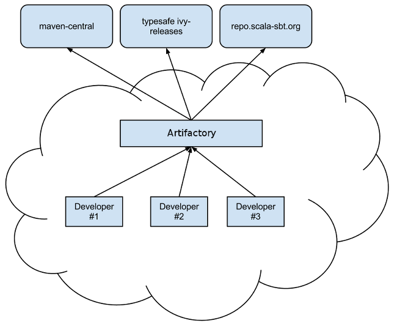

Scala SBT en entreprise
Damien Lecan
Architecte Java & Co.
Web
Développeur depuis 1998
Nantes, France
SQLI Group
@dlecan
github.com/dlecan
Sommaire
Présentation
Proxy d'entreprise

Le fichier
~/.sbt/repositories
La propriété
-Dsbt.override.build.repos=true
Cas particulier de Play Framework 2.x
Publication